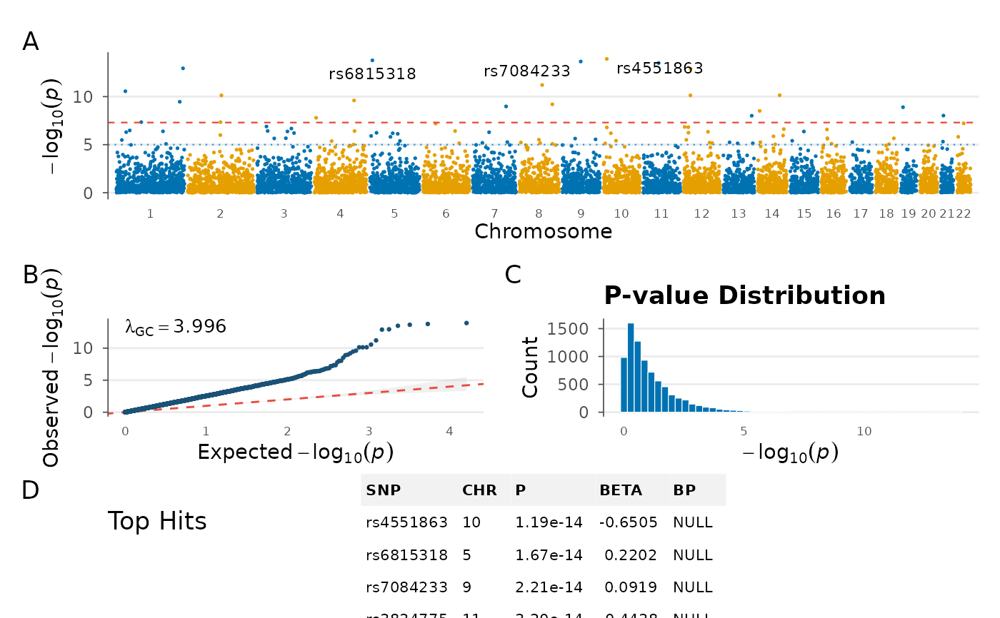

A multi-panel dashboard combining Manhattan plot, QQ plot, top hits table, and summary statistics into a single publication-ready figure.
Usage
gwas_summary(
data,
chr = NULL,
bp = NULL,
p = NULL,
snp = NULL,
panels = c("manhattan", "qq", "top_hits", "density"),
n_top = 5,
genome_wide = 5e-08,
suggestive = 1e-05,
colors = NULL,
palette = "colorblind",
label_top_n = 3,
title = NULL,
theme_fn = NULL,
layout = "auto"
)Arguments
- data
A
gwas_dataobject or data.frame.- chr, bp, p, snp
Column name overrides.
- panels
Character vector of panels to include. Options: "manhattan", "qq", "top_hits", "density", "stats".
- n_top
Number of top hits to display in the table.
- genome_wide
Genome-wide significance threshold.
- suggestive
Suggestive significance threshold.
- colors
Two-color vector for Manhattan chromosome colors.
- palette
Palette name from
gwas_palette().- label_top_n
Label top N SNPs on Manhattan.
- title
Overall title.
- theme_fn
Theme function to apply (default
theme_gwas()).- layout
Layout arrangement: "auto", "wide", or "tall".
Examples
data(example_gwas)
gwas_summary(example_gwas)
